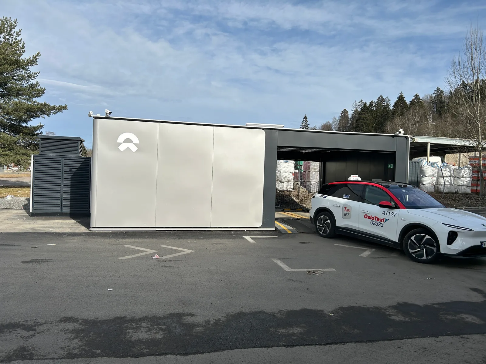

▲ 전기차 배터리 소유권 분리를 논의하는 세미나가 9월 22일 국회의원회관에서 열렸다 ⓒ Wikimedia Commons
전기차 가격의 상당 부분은 배터리가 차지한다. 그런데 그 배터리를 차체와 분리해 별도로 등록·소유할 수 있게 하면 무슨 일이 벌어질까. 2026년 9월 22일 국회의원회관에서 이 질문을 정면으로 다룬 세미나가 열렸다.
손명수 의원실이 주최하고 한국자동차모빌리티산업협회(KAMA)가 주관한 이번 세미나의 주제는 "전기차 배터리 소유권 분리, 새로운 모빌리티 시장을 열다"였다. 배터리를 부품이 아니라 독립된 자산으로 다루자는 논의가 국회 차원에서 본격화된 셈이다.
1. 세미나 개요 — 누가, 왜 모였나
이번 세미나는 더불어민주당 손명수 의원실이 주최하고 한국자동차모빌리티산업협회(KAMA)가 주관해 국회의원회관에서 열렸다. 정대진 KAMA 회장은 현행 제도에서는 자동차와 배터리의 소유권을 분리해 등록·관리하는 데 한계가 있어, 배터리 리스·구독 등 새로운 사업 확대에 제약이 있다고 지적했다.
📍 손명수 의원의 발언
손명수 의원은 "전기차 대중화에 맞춰 국민이 부담 없이 전기차를 선택하고 이용할 수 있는 환경을 만드는 것이 중요하다"며 "이번 세미나가 소비자 부담을 낮추고 자동차·배터리 산업의 새로운 활로를 모색하는 계기가 되기를 기대한다"고 말했다.
세미나 관련 보도는 아래 기사에서 확인할 수 있다. 뉴스핌 기사 바로가기
2. 배터리 소유권 분리란 무엇인가
지금은 전기차를 사면 차체와 배터리가 하나의 자산으로 등록된다. 배터리 소유권 분리는 이 둘을 법적으로 나눠 각각 등록·관리하도록 바꾸는 것을 말한다.
| 구분 | 내용 |
|---|---|
| 현행 | 차체 + 배터리를 하나의 자산으로 등록, 구매자가 배터리까지 함께 소유 |
| 소유권 분리 후 | 차체는 구매, 배터리는 별도 사업자가 소유 — 소비자는 배터리를 리스·구독 |
| 제도적 변화 | 대여구동축전지 개념 신설, 자동차등록원부에 배터리 대여자 표시 |
관련 보도에 따르면 이번에 논의된 자동차관리법 개정안에는 대여구동축전지 개념 신설, 차체와 배터리의 소유권 분리 등록, 자동차등록원부상 배터리 대여자 표시, 배터리 대여사업자의 사업요건과 소비자 보호를 위한 정보제공·성능평가 등의 내용이 담겼다.

▲ 배터리를 차체와 분리된 별도 자산으로 다루면 배터리 대여·구독 사업이 가능해진다 ⓒ Wikimedia Commons
3. 왜 필요한가 — 초기 가격 인하와 중고 EV 시장 활성화
전기차 가격에서 배터리가 차지하는 비중은 여전히 크다. 배터리를 별도로 리스·구독할 수 있게 되면, 소비자는 차체 가격만 지불하고 배터리 비용은 월 사용료 형태로 나눠 낼 수 있어 초기 구매 부담이 낮아진다.
중고차 시장에도 영향이 크다. 지금은 배터리 성능 저하가 곧 중고 전기차 가치 하락으로 직결되는데, 배터리 소유권이 분리되면 배터리 성능 저하와 잔존가치 하락의 위험을 배터리 소유·운영 주체가 부담하는 구조로 바뀔 수 있다. 이는 그동안 중고 전기차 거래를 위축시켜온 배터리 상태 불확실성 문제를 완화할 잠재력이 있다.
✅ 기대되는 신규 사업모델
관련 보도에서는 배터리 소유권 분리를 토대로 배터리 구독(BaaS), 배터리 뱅크, 배터리 교체·용량 유연화, 이동형 에너지, V2G·VPP(가상발전소), 진단·가치평가, 생애주기 순환 등 신규 사업모델이 제시됐다고 전해진다.

▲ 배터리 잔존가치 불확실성은 그동안 중고 전기차 거래를 위축시켜온 요인 중 하나로 꼽혀왔다 ⓒ Wikimedia Commons
4. 해외 사례 — 르노 조에의 실패, 니오의 배터리 교환
배터리 소유권 분리 아이디어가 새로운 것은 아니다. 프랑스 르노는 초기 전기차 조에(ZOE)에서 배터리를 별도 리스하는 모델을 운영했으나, 이후 시장에서 단계적으로 종료하고 배터리 포함 판매 방식으로 전환했다.
📍 르노 사례가 남긴 교훈
르노의 배터리 리스 모델은 월 구독료를 장기간 부담할 때의 총소유비용(TCO)이 소비자에게 명확히 다가오지 않았고, 중고차 거래 때 배터리 소유권 정리가 복잡하다는 문제 등이 겹치며 흥행에 어려움을 겪었다. 배터리 구독 모델의 성패가 초기 가격 인하 효과만으로 결정되지 않는다는 점을 보여주는 사례로 꼽힌다.
반면 중국 니오(NIO)는 배터리 소유가 아닌 배터리 교환(스와핑) 방식으로 접근한다. 배터리 상태가 나빠지면 충전 대신 완충된 배터리팩으로 통째로 교환해주는 스테이션을 운영하며, 이 모델은 노르웨이 등 유럽 시장으로도 확대되고 있다.

▲ 니오는 배터리를 소유하는 대신 완충 배터리팩으로 교환해주는 스와핑 스테이션을 운영한다(사진은 노르웨이 오슬로) ⓒ Wikimedia Commons
국내 완성차 업계도 이미 관련 실증에 나섰다. 현대차와 현대캐피탈은 보증기간이 끝난 법인택시 일부를 대상으로 배터리 소유권을 분리해 구독하는 실증사업을 진행 중인 것으로 전해진다. 배터리 교체망 확충에 집중하는 니오, 초기 가격 인하에 집중했던 르노와 달리, 현대차는 소유권 분리가 운행 비용과 차량 활용 기간, 배터리 관리 부담에 실제로 어떤 영향을 주는지 확인하는 데 초점을 맞추고 있다는 평가가 나온다.
5. 쟁점과 전망 — 안전·보험·보조금이 함께 정비돼야 한다
법 개정만으로 시장이 곧바로 열리는 것은 아니다. 관련 보도들은 배터리 소유권 분리가 실효성을 가지려면 여러 제도가 동시에 정비돼야 한다고 지적한다.
✅ 함께 정비돼야 할 제도적 쟁점
· 안전·사후관리 책임: 배터리 화재·결함 발생 시 차량 제조사와 배터리 소유(대여)사업자 중 누가 책임지는지 명확화 필요
· 보험제도: 차체와 배터리의 소유자가 달라지는 거래구조에 맞춰 자동차보험 체계 정비 필요
· 보조금 지급기준: 배터리를 뺀 차체 가격 기준으로 보조금을 산정할지, 별도 기준을 마련할지 정리 필요
· 세제: 배터리 대여료에 대한 과세 근거 마련 필요
· 성능평가·소비자 정보 제공: 대여 배터리의 성능·잔존수명을 소비자가 확인할 수 있는 체계 필요
📍 야당 반응 — "소비자 보호·안전 논의가 먼저"
세미나를 둘러싼 논의에서는 여당을 중심으로 배터리 소유권 분리·대여사업 제도화를 추진하는 흐름이 있지만, 일부 야당 측에서는 소비자 보호와 안전에 대한 충분한 논의가 선행돼야 한다는 신중론도 함께 제기된 것으로 전해진다.
6. 요약
2026년 9월 22일 국회의원회관에서 열린 세미나는 전기차 차체와 배터리의 소유권을 분리해 등록·관리하는 방안을 본격 논의했다. 손명수 의원실이 주최하고 한국자동차모빌리티산업협회(KAMA)가 주관했으며, 자동차관리법 개정을 통해 대여구동축전지 개념을 신설하고 배터리 대여사업을 제도화하는 방향이 제시됐다.
배터리 소유권 분리는 전기차 초기 구매 부담을 낮추고, 배터리 성능 저하 위험을 소비자가 아닌 배터리 소유·운영 주체가 지게 함으로써 중고 전기차 시장 활성화에도 기여할 잠재력이 있다. 다만 르노 조에의 배터리 리스 모델이 흥행에 실패했던 경험은, 제도만으로는 시장이 저절로 열리지 않는다는 점을 보여준다.
안전·사후관리 책임, 보험, 보조금·세제, 성능평가 등 관련 제도가 함께 정비돼야 배터리 소유권 분리가 실제 소비자 부담 완화와 신산업 창출로 이어질 수 있다는 지적이 나온다.